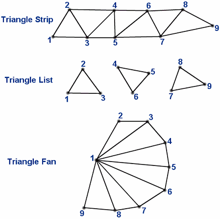

MeshDrawMode
| Available since LÖVE 0.9.0 |
| This enum is not supported in earlier versions. |
How a Mesh's vertices are used when drawing.
Constants
- fan
- The vertices create a "fan" shape with the first vertex acting as the hub point. Can be easily used to draw simple convex polygons.
- strip
- The vertices create a series of connected triangles using vertices 1, 2, 3, then 3, 2, 4 (note the order), then 3, 4, 5, and so on.
- triangles
- The vertices create unconnected triangles.
- points
- The vertices are drawn as unconnected points (see love.graphics.setPointSize.)
Notes
If the Mesh has a custom vertex map, then that will determine the order in which the vertices are interpreted by the draw mode.
The vertex map can also be used to make the draw mode reuse vertices, for example if the Mesh has 4 vertices and is using the "triangles" draw mode, the vertex map could be set to {1, 2, 3, 1, 3, 4} to draw 2 triangles using only 4 vertices, effectively drawing a quad using triangles.

See Also
Category: